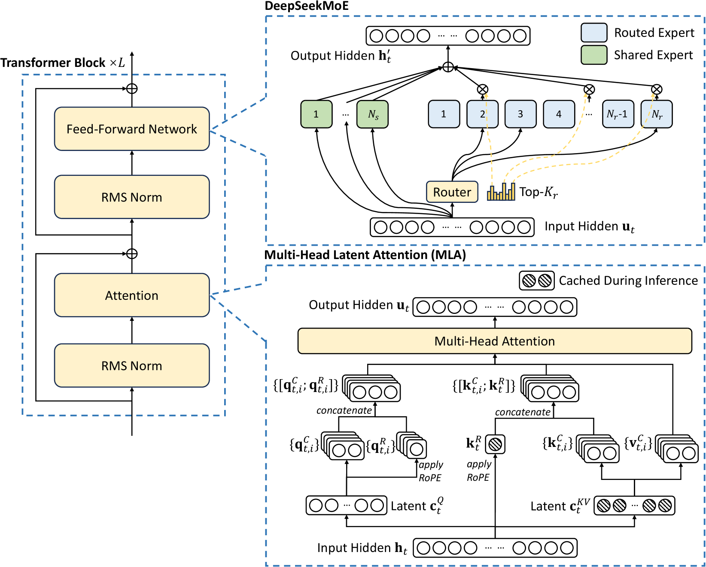

Sparsity in LLMs¶
This post is about my learning experience on sparsity in LLMs.
Overview¶
DeepSeek-Series¶

Multi-Head Latent Attention¶
Standard Multi-Head Attention¶
\(d\) is the embedding dimension of a token, \(n_h\) is the number of attention heads, \(d_h\) is the dimension per head, and \(h_t \in \mathbb{R}^d\) is the attention input of the \(t\)-th token at an attention layer. Standard MHA first produces \(q_t, k_t, v_t \in \mathbb{R}^{d_h n_h}\) through three matrices \(W^Q, W^K, W^V \in \mathbb{R}^{d_h n_h \times d}\), respectively:
Then, \(q_t, k_t, v_t\) will be sliced into \(n_h\) heads for the multi-head attention computation:
where \(q_{t,i}, k_{t,i}, v_{t,i} \in \mathbb{R}^{d_h}\) denote the query, key, and value of the \(i\)-th attention head, respectively; \(W^O \in \mathbb{R}^{d \times d_h n_h}\) denotes the output projection matrix. During inference, all keys and values need to be cached to accelerate inference, so MHA needs to cache \(2 n_h d_h\) elements for each token. In model deployment, this heavy KV cache is a large bottleneck that limits the maximum batch size and sequence length.
Low-Rank Key-Value Joint Compression¶
In 1, the core of MLA is the low-rank joint compression for keys and values to reduce KV cache:
where \(\mathbf{c}_t^{KV} \in \mathbb{R}^{d_c}\) is the compressed latent vector for keys and values; \(d_c (\ll d_h n_h)\) denotes the KV compression dimension; \(W^{DKV} \in \mathbb{R}^{d_c \times d}\) is the down-projection matrix; and \(W^{UK}, W^{UV} \in \mathbb{R}^{d_h n_h \times d_c}\) are the up-projection matrices for keys and values, respectively.
During inference, MLA only needs to cache \(\mathbf{c}_t^{KV}\), so its KV cache has only \(d_c l\) elements, where \(l\) denotes the number of layers.
In addition, during inference, since \(W^{UK}\) can be absorbed into \(W^Q\), and \(W^{UV}\) can be absorbed into \(W^O\), we even do not need to compute keys and values out for attention.
Moreover, in order to reduce the activation memory during training, we also perform low-rank compression for the queries, even if it cannot reduce the KV cache:
where \(\mathbf{c}_t^Q \in \mathbb{R}^{d_c'}\) is the compressed latent vector for queries; \(d_c' (\ll d_h n_h)\) denotes the query compression dimension; and \(W^{DQ} \in \mathbb{R}^{d_c' \times d}\), \(W^{UQ} \in \mathbb{R}^{d_h n_h \times d_c'}\) are the down-projection and up-projection matrices for queries, respectively.
Deepseek MoE¶
Basic Architecture¶
DeepSeekMoE has two key ideas: segmenting experts into finer granularity for higher expert specialization and more accurate knowledge acquisition, and isolating some shared experts for mitigating knowledge redundancy among routed experts. With the same number of activated and total expert parameters, DeepSeekMoE can outperform conventional MoE architectures like GShard by a large margin.
Let \(\mathbf{u}_t\) be the FFN input of the \(t\)-th token, we compute the FFN output \(\mathbf{h}_t'\) as follows:
where \(N_s\) and \(N_r\) denote the numbers of shared experts and routed experts, respectively; \(\text{FFN}_i^{(s)}(\cdot)\) and \(\text{FFN}_i^{(r)}(\cdot)\) denote the \(i\)-th shared expert and the \(i\)-th routed expert, respectively; \(K_r\) denotes the number of activated routed experts; \(g_{i,t}\) is the gate value for the \(i\)-th expert; \(s_{i,t}\) is the token-to-expert affinity;
\(\mathbf{e}_i\) is the centroid of the \(i\)-th routed expert in this layer;
and \(\text{Topk}(\cdot, K)\) denotes the set comprising \(K\) highest scores among the affinity scores calculated for the \(t\)-th token and all routed experts.
-
DeepSeek. Deepseek-v2: a strong, economical, and efficient mixture-of-experts language model. arXiv preprint arXiv:2405.04434, 2024. ↩